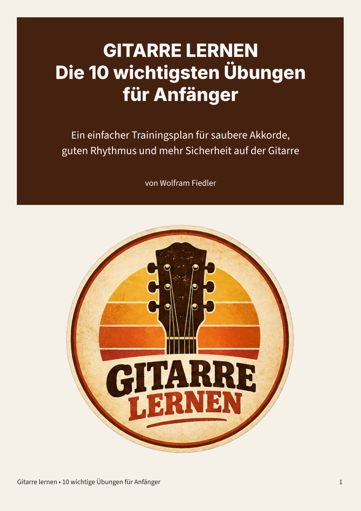

NEU
Gitarre
Klassische Gitarrenpedale
Mehr Klang. Mehr Ausdruck. Der komplette Guide für den perfekten Gitarrensound. Einstellungen, Sounds, Effektkette und Praxis.
Entdecke meine E-Books, Gitarren-Lernmaterialien, PDF-Ratgeber und musikalischen Lernhilfen. Lies die Bücher direkt online oder lade die PDF-Datei herunter.
Mehr Klang. Mehr Ausdruck. Der komplette Guide für den perfekten Gitarrensound. Einstellungen, Sounds, Effektkette und Praxis.

Praktischer Einstieg für Anfänger mit wichtigen Übungen für Akkorde, Rhythmus und sauberes Greifen.
Der Praxis-Leitfaden für saubere Mixe, kluge Aufstellung und effektive Proben.
Ein Leitfaden in 15 Teilen, was ein fortgeschrittener Gitarrist beherrschen sollte, um sich von einem Anfänger zu unterscheiden.